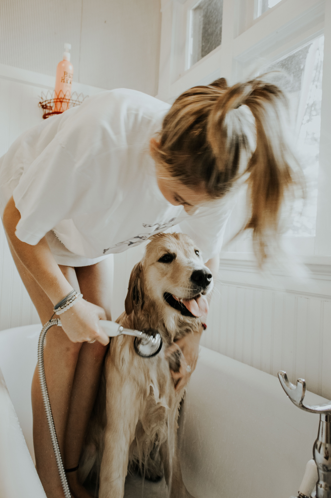

Questions to ask yourself
Before getting a pet, here are some questions you should ask yourself:
Why do I want a pet? Is it for me or for someone else?
What kind of pet do I want? Do I want one that I can hug and pet, or one that I can only observe?
Do I have the time to be able to commit to taking care of a pet?
What responsibilities does owning this pet require? Will I have to take it for walks? How often will I have to feed it?
Do I have the resources to take care of a pet? How much money could it potentially cost?
Do I live in a place where I could take care of a pet? Is my house or apartment pet-friendly? Is there a veterinarian in town?
Costs
From buying or adopting an animal to paying for food and veterinarian visits, owning a pet can be expensive. According to CNET (https://www.cnet.com/personal-finance/heres-how-much-it-costs-to-own-a-dog-or-cat-in-2021/), you might pay $1,500 - $2,000 during the first year (mostly due to the cost of buying or adopting a pet). CNET also says that there are various expenses, such as toys, food, treats, equipment (such as leashes, fish tanks, collars, and kennels), vet checkups, as well as any medical problems that may come up. Pawlicy (https://www.pawlicy.com/blog/vet-visit-cost/) says that, in general, larger pets are more expensive to take care of than smaller pets, and that the medical costs for older pets are higher. They say that a checkup can cost between $50 and $250, but that doesn't take into account any ongoing or emergency medical problems. One way to lower costs related to medical care for your pet is by purchasing pet insurance.

Responsibilities
While the type of responsibilities varies from pet to pet, they all have needs that need to be met, and some pets require more care than others. For example, you'll need to walk your dog, clean your cat's litterbox, and clean your fish's tank. Think about how much time you have to devote to making sure these needs are met properly. What will you do if you want to go on vacation? Will you bring the pet (if possible) or will you ask a neighbor to take care of your pet while you're gone? Do you have any kids? If so, for the safety of both your children and the pet, you will need to make sure they are aware of how to be a good pet owner. Finally, keep in mind that part of providing a pet with a good home is giving them attention. While this isn't a requirement for some pets (such as fish), it is absolutely necessary for others (such as dogs). How much time will you (or the people you live with) have to spend with your pet? If you live alone and travel often, your pet might get lonely even if you have someone who can check up on them every day.
Tips
While pet ownership can be challenging, for many people it is worth the cost and the work. Here are some tips to make life easier as a pet owner:
- Do your research on whatever pet you want to own. While taking care of a fish may seem easy, you might be surprised at how much work can be involved.
- Make sure everyone you live with wants to get a pet. Pets can place a lot of pressure on their owners, meaning everyone should be on board and prepared.
- Make your home pet friendly. Pets such as cats and dogs are naturally curious, so take the time to make sure your home is a safe environment for them.
- If you are planning on getting more than one pet, be sure to do research and take the time to make sure they will get along, especially if they are different species (such as a dog and a cat).
- Have fun! Owning a pet is a great experience for both the animal and the owner. While there are costs and responsibilities, you will be rewarded with a new friend and companion.